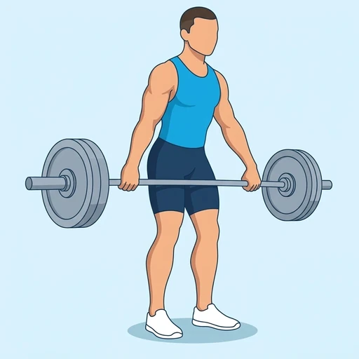
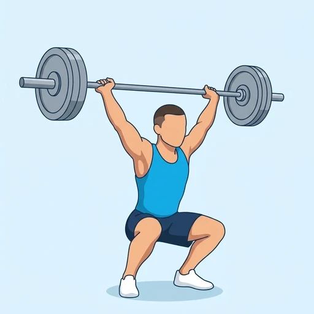

Hang Snatch
An Olympic lift in which a barbell is pulled from the hang position, just above the knees, to overhead in one explosive movement and caught in a squat. It builds power through the hips, back and shoulders.
Full body · Barbell · Intermediate


Muscles worked by the Hang Snatch
Primary
Secondary
Also called: glute, glutes, gluteus maximus, buttocks, butt, quad.
Equipment
Also called: bar, olympic barbell, straight bar, olympic bar, power bar.
How to do the Hang Snatch
- Stand with a wide snatch grip on a barbell held at the thighs and the feet about hip-width apart.
- Hinge at the hips to lower the bar to just above the knees, keeping the back flat and the shoulders over the bar.
- Explosively extend the hips, knees and ankles, shrugging as the bar rises.
- Pull yourself under the bar and catch it overhead with locked arms in a squat.
- Stand up fully with the bar overhead and stable.
- Lower the bar under control back to the thighs and reset.
Form tips
- Keep the bar close to the body throughout the pull.
- Finish the pull with full extension before dropping under the bar.
- Learn the movement with a light bar or a dowel; the wide overhead catch needs good shoulder and hip mobility.
At a glance
| Body part | Full body |
|---|---|
| Category | Olympic |
| Force type | Dynamic |
| Mechanic | Compound |
| Difficulty | Intermediate |
| Equipment | Barbell |
| Goals | Power, Strength |
| MET | 8.0 (metabolic equivalent, for calorie estimates) |
| Unilateral | No |
| Bodyweight | No |
| Dataset id | hang-snatch |
Hang Snatch in German & Spanish
| German | Hang Snatch |
|---|---|
| Spanish | Arrancada desde Colgante |
Descriptions, instructions and tips ship in all three languages in the JSON.
Related exercises
Exercise data (JSON)
The record below is exactly what exercises.json ships for this exercise — names, descriptions, instructions and tips in English, German and Spanish.
{
"id": "hang-snatch",
"name_en": "Hang Snatch",
"name_de": "Hang Snatch",
"name_es": "Arrancada desde Colgante",
"description_en": "An Olympic lift in which a barbell is pulled from the hang position, just above the knees, to overhead in one explosive movement and caught in a squat. It builds power through the hips, back and shoulders.",
"description_de": "Eine olympische Übung, bei der eine Langhantel aus der Hangposition knapp über den Knien in einer explosiven Bewegung nach oben über den Kopf gezogen und in der Kniebeuge aufgefangen wird. Sie baut Schnellkraft in Hüfte, Rücken und Schultern auf.",
"description_es": "Un levantamiento olímpico en el que una barra se lleva desde la posición de colgante, justo por encima de las rodillas, hasta encima de la cabeza en un movimiento explosivo y se recibe en sentadilla. Desarrolla potencia en caderas, espalda y hombros.",
"category": "olympic",
"force_type": "dynamic",
"mechanic": "compound",
"difficulty": "intermediate",
"equipment": "barbell",
"body_part": "full_body",
"primary_muscles": [
"gluteus_maximus",
"quadriceps",
"trapezius"
],
"secondary_muscles": [
"anterior_deltoid",
"erector_spinae",
"hamstrings"
],
"goals": [
"power",
"strength"
],
"variation_group": "snatch",
"is_unilateral": false,
"is_bodyweight": false,
"instructions_en": [
"Stand with a wide snatch grip on a barbell held at the thighs and the feet about hip-width apart.",
"Hinge at the hips to lower the bar to just above the knees, keeping the back flat and the shoulders over the bar.",
"Explosively extend the hips, knees and ankles, shrugging as the bar rises.",
"Pull yourself under the bar and catch it overhead with locked arms in a squat.",
"Stand up fully with the bar overhead and stable.",
"Lower the bar under control back to the thighs and reset."
],
"instructions_de": [
"Steh mit weitem Reißgriff an einer Langhantel, die an den Oberschenkeln hängt, die Füße etwa hüftbreit.",
"Schieb die Hüfte nach hinten und senke die Stange bis knapp über die Knie, der Rücken bleibt flach und die Schultern sind über der Stange.",
"Streck Hüfte, Knie und Sprunggelenke explosiv und zieh dabei die Schultern hoch, während die Stange steigt.",
"Zieh dich unter die Stange und fang sie mit durchgestreckten Armen über dem Kopf in der Kniebeuge auf.",
"Steh vollständig auf, die Stange stabil über dem Kopf.",
"Senke die Stange kontrolliert zurück an die Oberschenkel und beginne von vorn."
],
"instructions_es": [
"Colócate de pie con un agarre ancho de arrancada sobre una barra sostenida a la altura de los muslos y los pies a la anchura de las caderas aproximadamente.",
"Haz una bisagra de cadera para bajar la barra justo por encima de las rodillas, con la espalda plana y los hombros sobre la barra.",
"Extiende caderas, rodillas y tobillos de forma explosiva, encogiendo los hombros mientras sube la barra.",
"Métete bajo la barra y recíbela sobre la cabeza con los brazos bloqueados, en sentadilla.",
"Ponte de pie por completo con la barra sobre la cabeza y estable.",
"Baja la barra de forma controlada hasta los muslos y reinicia."
],
"tips_en": [
"Keep the bar close to the body throughout the pull.",
"Finish the pull with full extension before dropping under the bar.",
"Learn the movement with a light bar or a dowel; the wide overhead catch needs good shoulder and hip mobility."
],
"tips_de": [
"Halte die Stange während des gesamten Zugs nah am Körper.",
"Beende den Zug mit voller Streckung, bevor du dich unter die Stange fallen lässt.",
"Lerne die Bewegung mit einer leichten Stange oder einem Stab; das weite Auffangen über dem Kopf erfordert gute Schulter- und Hüftbeweglichkeit."
],
"tips_es": [
"Mantén la barra cerca del cuerpo durante todo el tirón.",
"Termina el tirón con extensión completa antes de meterte bajo la barra.",
"Aprende el movimiento con una barra ligera o un palo; la recepción ancha sobre la cabeza exige buena movilidad de hombros y caderas."
],
"met": 8.0,
"images": {
"flat": {
"start": "images/flat/hang-snatch-start.webp",
"peak": "images/flat/hang-snatch-peak.webp"
}
}
}Fetch just this exercise
const { exercises } = await fetch(
"https://exercise-dataset.com/exercises.json"
).then(r => r.json());
const ex = exercises.find(e => e.id === "hang-snatch");Free for personal and commercial in-app use with attribution (“Exercise data by RepDB”) — see the license and ready-made attribution snippets. Redistributing the data as a dataset or API is not permitted.